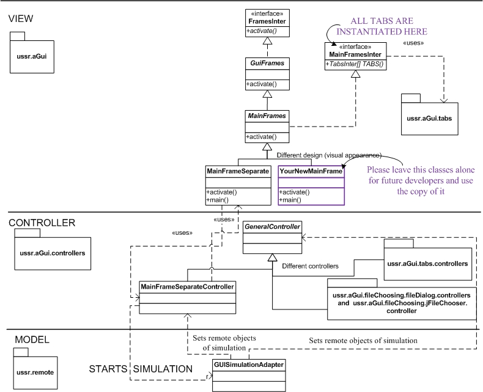

Contains GUI source code. For implementation were used MVC (Model View Controller) and Strategy patterns.
Brief User Guide:
Implement your own class highlighted with purple color in the design class diagram beneath. The same example in the form of source code can be found in the current package.
Locate the text or tooltip and refactor it here: ussr.aGui.enumerations.MainFrameComponentsText.java
Use and expand if needed, implementation located here: ussr.aGui.enumerations.JOptionPaneMessages.java
Expand implementation in following place: ussr.aGui.enumerations.MainFrameIcons.java
All tabs are instantiated in interface called MainFramesInter, look DCD above. This is where you will have to instantiate your own. There is also example commented with keyword "YOUR NEW TAB" directly in the code, indicating the places to add your source code. Go to package "ussr.aGui.tabs"->package.html to find out how to implement your tab in more detail.
Reuse functionality described here: "ussr.aGui.tabs"->package.html
Look here: MasterThesis.pdf, start from page 75 if you are interested in implementation. At the same time, remember that this document was written before current GUI was implemented. As a result, all GUI related description should be disregarded, some of business logic(Model) as well. You are most likely to find a lot of inconsistencies.
Write an e-mail to Konstantinas Kuznecovas: kuznetsovas2003@yahoo.com . Please, do not expect an answer at once, you will most likely receive it during several days. This is assuming I know it:).